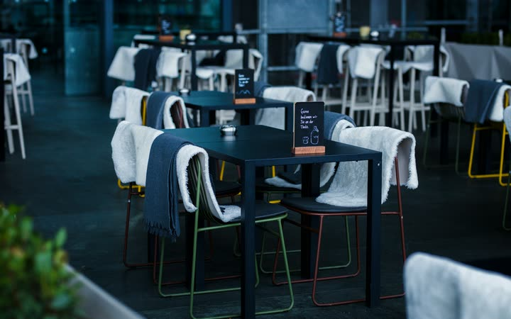

Filedeck is a lightbox that took the rest of the office with it: photos, PDFs, video, audio, and the spreadsheet nobody can preview. One attribute on the anchors you already wrote.
Reads the extension and gets on with it — no plugins per format
Photos, a panorama, SVG, video, audio, PDF, Excel, CSV, Word, plain text. Every tile is an ordinary anchor with one attribute on it.

JPGcafe-terrace-6654x4159.jpg SVGvector-illustration.svg MP4 MP4ocean-clip-960x400.mp4 MP3 MP3ocean-waves.mp3 PDF PDFdeep-residual-learning.pdf XLSX XLSXfinancial-model.xlsx CSV CSVincome-statement.csv DOCX DOCXresearch-report.docx TXT TXTlong-form-text.txtTwo attributes are required and the rest are polish. Turn JavaScript off and the link goes back to being a link — nothing breaks.
<!-- an href, a group name, and that's the lot -->
<a href="/media/drawing.pdf"
data-filedeck="files"
data-size="640 KB · 12 pages"
title="drawing-rev-c.pdf">
Assembly drawing
</a>
<script src="filedeck.umd.min.js"></script>
<script>new Filedeck();</script><img>, then a file-type icon.data-name → title → img alt → basename./download/ view, say. Pick from image, pdf, video, audio, file.Every file gets a sensible landing. Controls that make no sense for a format quietly don't appear — no greyed-out buttons pretending to be useful.
Zoom to 400%, pan around, pinch on a phone. jpg png gif webp avif svg
The browser's own PDF reader, embedded full-stage. Small screens get a tidy card instead.
Native players, so scrubbing stays scrubbing. mp4 webm mp3 wav
Spreadsheets, documents, CAD: no preview for these yet — you get a labelled file card with the size and a download button.
The swipe axis locks after about 12px, so a wonky diagonal does one thing instead of two. A fast flick counts even if you barely moved.
lb.openFrom('#tile-7'); lb.goTo(3);
lb.setZoom(200); lb.resetView(); lb.destroy();
document.addEventListener('filedeck:change', (e) => {
log(e.detail.item.name);
});Also fires open, close, zoom and action:copy. That's where your delete button lives.
CDN and a script tag if you like living simply. Self-host the two files if you'd rather. npm if you already own a bundler and want to keep it busy.
<link rel="stylesheet" href="https://cdn.jsdelivr.net/npm/filedeck@0.1/dist/filedeck.min.css">
<script src="https://cdn.jsdelivr.net/npm/filedeck@0.1/dist/filedeck.umd.min.js"></script>npm install filedeck
// then
import Filedeck from 'filedeck';
import 'filedeck/filedeck.css';
new Filedeck();{kind=link}
{kind=link}
{kind=link}
{kind=link}
{kind=link}